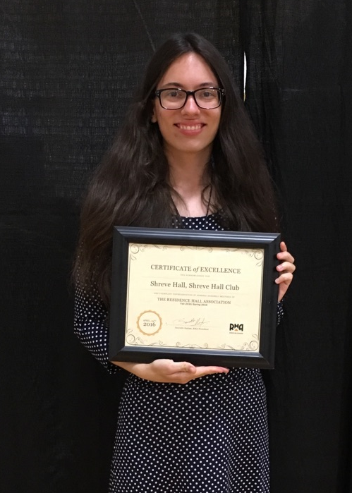

Awards
University Awards
- Phi Beta Kappa | 2018
- El Mejor Promedio Académico (97.5/100) | 2018
- Townsend Writing Competition 1st Place | 2017
- College of Agriculture Oustanding Junior | 2018
- College of Agriculture Outstanding Sophomore | 2017
- Department of Biochemistry Oustanding Junior | 2018
- Department of Biochemistry Outstanding Sophomore | 2017
- Department of Biochemistry Outstanding Freshman | 2016
- Purdue University Dean’s List | Fall 2015, Spring 2016, Fall 2016
Grants
- Martin Agricultural Research Scholarship | 2017 | $250
- Office of Academic Programs Funding for Professors | 2016 | $500
- Purdue Center for Cancer Research Fellowship | 2016 | $4000
Scholarships
- Big Move Study Abroad Scholarship | 2018
- Frank O’Bannon On-Time Higher Education Award | 2018 - 2019
- Ray W. Fuller Memorial Scholarship | 2018 - 2019
- J. Kelly and Margaret Ritchey O’Neall Memorial Scholarship | 2018 - 2019
- Gruel Memorial Endowment Scholarship | 2018 - 2019
- F. Richard and Helen Willsey Scholarship | 2018 - 2019
- Edwin T. Mertz Memorial Scholarship | 2017 - 2018
- John F. Benham Citizenship and Leadership Memorial Scholarship | 2017 - 2018
- Great Lakes STEM Scholarship | 2016 - 2017
- Wayne and Barbara Jennings Memorial Scholarship | 2016 - 2017
- Zygmunt Family Biochemistry Scholarship | 2016 - 2017
- Floyd E. and Nellie P. Elliot Ag Scholarship Fund Award | 2016 - 2017
- Rex Hall Memorial Scholarship Fund | 2016 - 2017
- University Incentive Grant | 2016 - 2017
- Bette Bennett Hammond Scholarship | 2015 - 2019
- Mitchell and Cheri Daniels Scholarship | 2015 - 2019
- Fall Cities Purdue Club Scholarship | 2015 - 2016
- Kelly and Margaret ONeall Scholarship | 2015-2016
- Pearl W. Smith Scholarship | 2015 - 2016
- Walter Pugsley Scholarship Fund | 2015 - 2016
- Centennial Opportunity Grant | 2015 - 2016
- Frank O' Bannon Honors Higher Education Award | 2015 - 2016